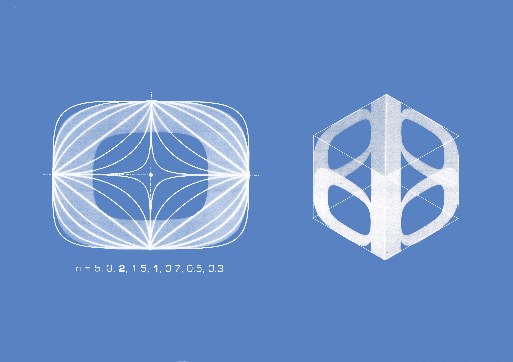
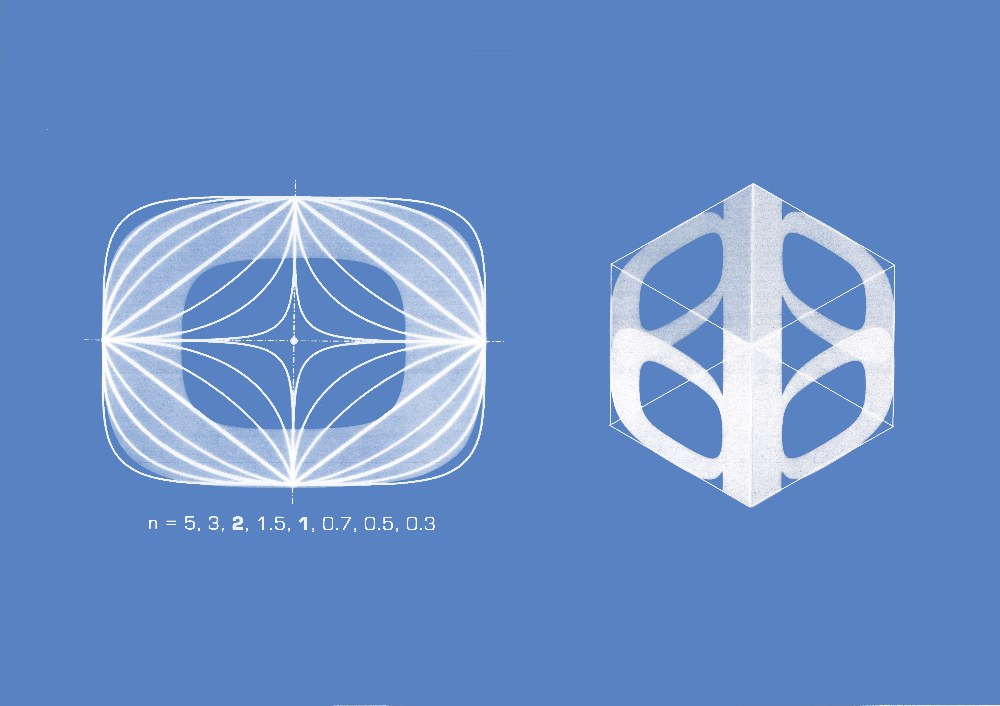

Eurostile Specimen
Typography
Experimental type specimen for Eurostile, a 1962 typeface by Aldo Novarese.
Novarese described Eurostile as a 'synthetic expression of our times'. It was designed to be a symbol of its era's civilisation, capturing the zeitgeist of the 60s. Novarese drew inspiration for the typeface from the geometric forms of mid century architecture and design, such as the period's train windows and television frames.
To acknowledge the conceptual underpinning of the typeface, my type specimen is inspired by architectural blueprints and their traditional cyanotype process.

 
